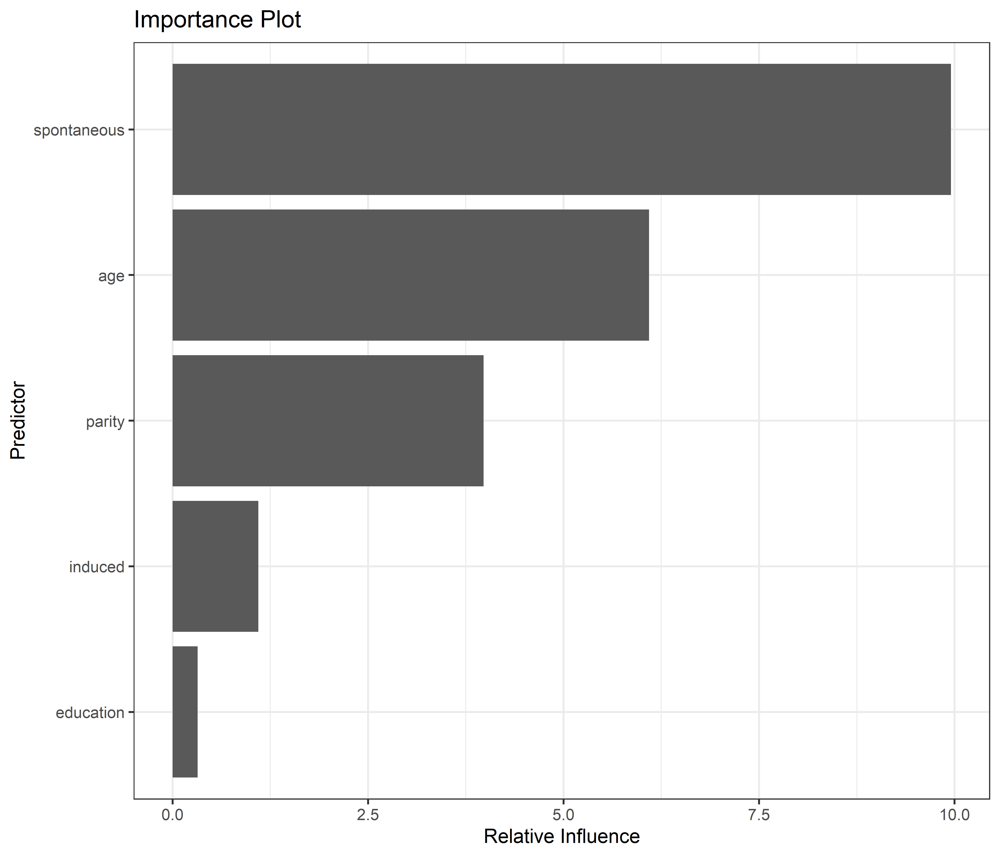
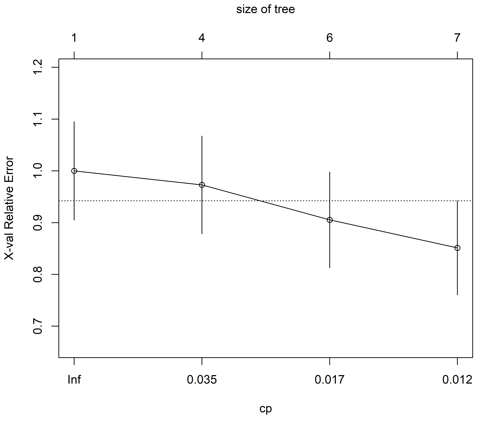
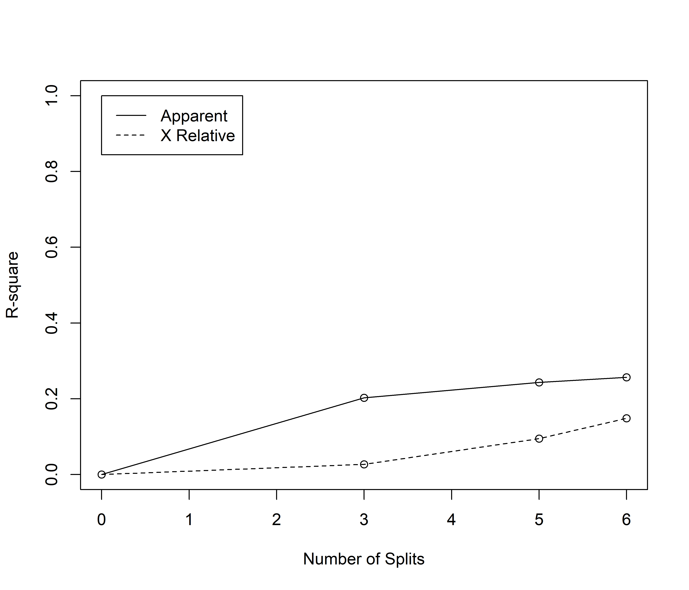
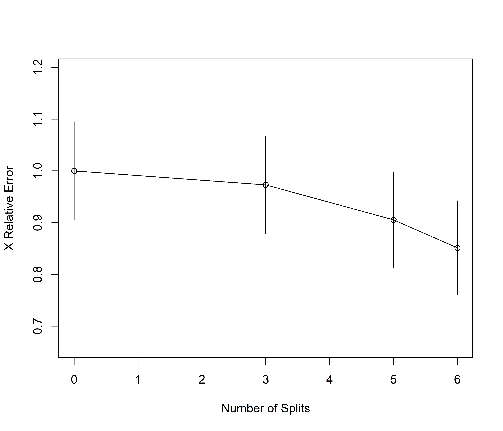
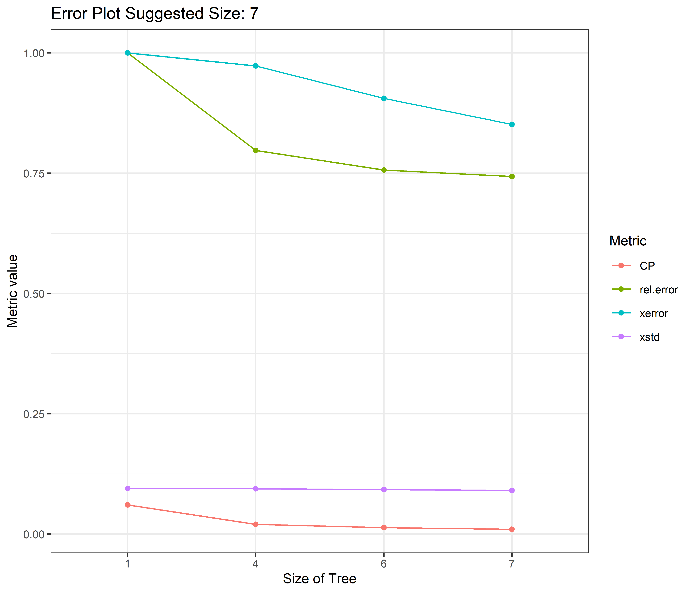
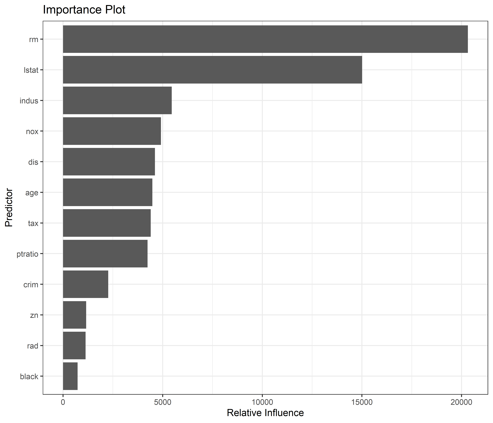
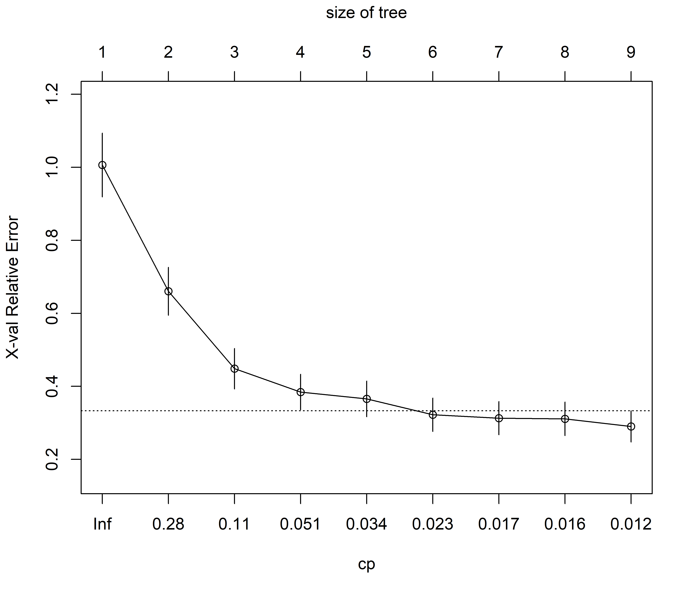
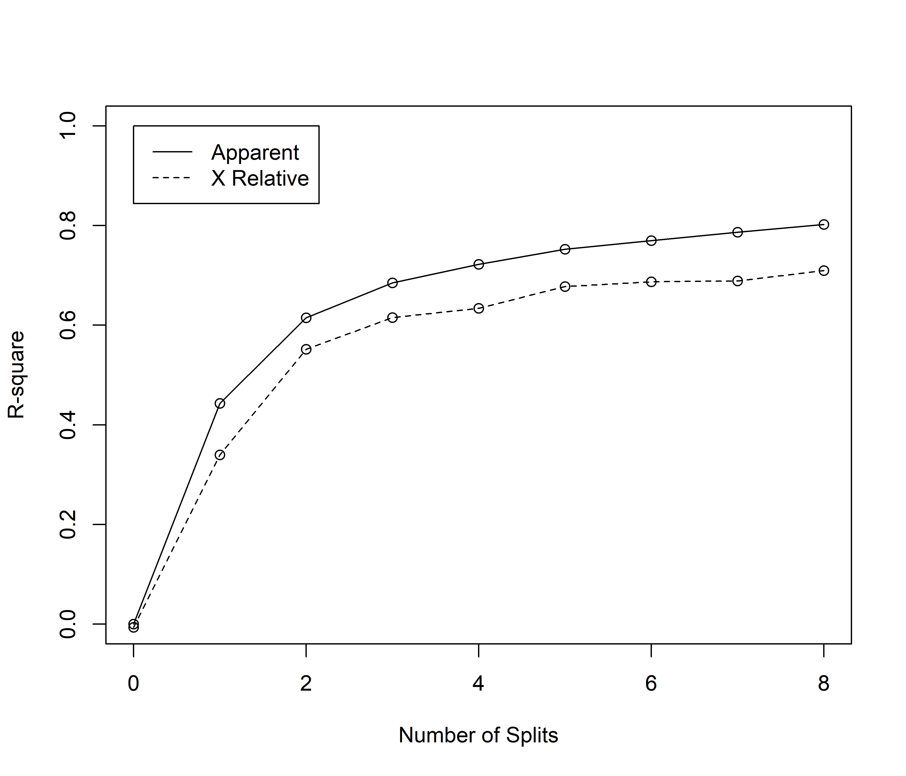
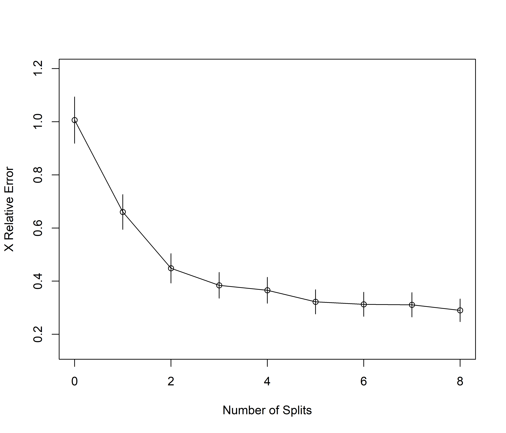
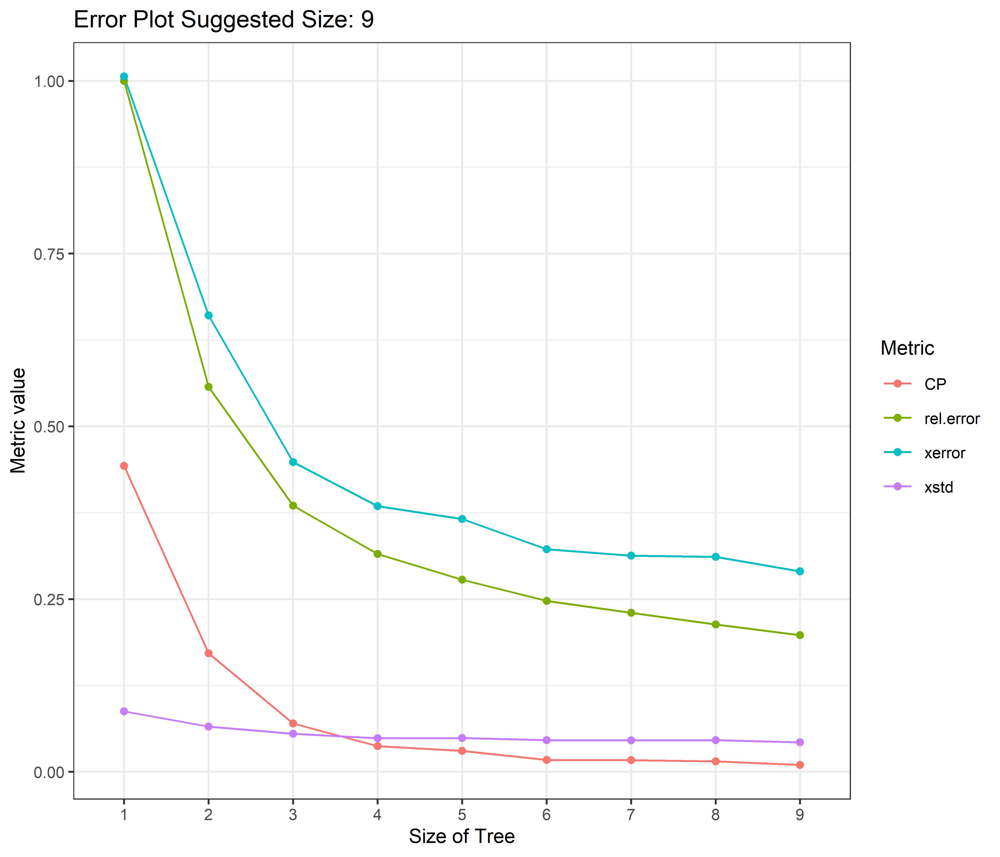

Code
source(paste0(directory, "code_rwf.R"))This shows the output of PART RPART functions from rwf. Installation instructions for rwf can be found here These functions are not installed by default they are in /rwf/working_functions/OTHER/ML_TREE_RPART.R
rpart implements CART (Classification and Regression Trees, Breiman et al., 1984). Starting from the full dataset at the root node, the algorithm searches every predictor and every possible split point on that predictor, and picks the single split that most improves node purity. Each resulting child node is then split again, recursively, until a stopping rule is reached (a minimum number of observations per node, a minimum improvement threshold, or a maximum depth). The result is a binary tree: every internal node asks a yes/no question about one predictor, and every terminal node (“leaf”) gives a prediction.
The measure of “improvement” depends on the outcome type:
method = "class", used below for case) — by default rpart uses the Gini impurity of the class distribution within a node; a split is chosen to make the two child nodes as class-pure as possible.method = "anova", used below for medv) — the criterion is the reduction in within-node sum of squares, i.e. the split that most reduces the variance of the outcome within each child node.A tree grown to full depth almost always overfits — it captures noise along with signal. rpart addresses this with cost-complexity pruning: every subtree \(T\) is scored as
\[R_\alpha(T) = R(T) + \alpha \, |T|\]
where \(R(T)\) is the tree’s error (relative to the root), \(|T|\) is the number of terminal nodes, and \(\alpha\) (called CP in rpart’s output) penalizes tree size. Varying \(\alpha\) from 0 to 1 produces a nested sequence of subtrees, from the full tree down to a single root node — this sequence is stored in model$cptable.
Because the apparent error of a tree always decreases as it grows (a larger tree can always fit the training data at least as well), rpart estimates each subtree’s error via internal k-fold cross-validation. cptable reports, for every candidate CP value: the relative error on the training data (rel error), the cross-validated error (xerror), and its standard deviation (xstd). The code below selects the tree whose CP gives the minimum xerror — a common, slightly more permissive alternative is the “1-SE rule” (the smallest tree within one standard error of the minimum), which favors an even simpler tree.
A predictor’s importance is the sum of the improvement in impurity (Gini, for classification) or sum-of-squares (for regression) attributable to it — counting not only splits where it was the primary splitter, but also splits where it acted as a surrogate (a stand-in used when the primary splitting variable is missing). This is why a variable can show non-trivial importance even if it never appears as a labeled split in the final tree diagram.
factor(case) ~ age + parity + education + spontaneous + inducedmedv ~ crim + zn + indus + chas + nox + rm + age + dis + rad +
tax + ptratio + black + lstatFold Cases: 1 Train: 223 Test: 25 Total: 248 Unique Train: 223 Unique Test: 25
Fold Cases: 2 Train: 223 Test: 25 Total: 248 Unique Train: 223 Unique Test: 25
Fold Cases: 3 Train: 223 Test: 25 Total: 248 Unique Train: 223 Unique Test: 25
Fold Cases: 4 Train: 224 Test: 24 Total: 248 Unique Train: 224 Unique Test: 24
Fold Cases: 5 Train: 223 Test: 25 Total: 248 Unique Train: 223 Unique Test: 25
Fold Cases: 6 Train: 223 Test: 25 Total: 248 Unique Train: 223 Unique Test: 25
Fold Cases: 7 Train: 224 Test: 24 Total: 248 Unique Train: 224 Unique Test: 24
Fold Cases: 8 Train: 223 Test: 25 Total: 248 Unique Train: 223 Unique Test: 25
Fold Cases: 9 Train: 223 Test: 25 Total: 248 Unique Train: 223 Unique Test: 25
Fold Cases: 10 Train: 223 Test: 25 Total: 248 Unique Train: 223 Unique Test: 25 Fold Cases: 1 Train: 455 Test: 51 Total: 506 Unique Train: 455 Unique Test: 51
Fold Cases: 2 Train: 455 Test: 51 Total: 506 Unique Train: 455 Unique Test: 51
Fold Cases: 3 Train: 456 Test: 50 Total: 506 Unique Train: 456 Unique Test: 50
Fold Cases: 4 Train: 455 Test: 51 Total: 506 Unique Train: 455 Unique Test: 51
Fold Cases: 5 Train: 456 Test: 50 Total: 506 Unique Train: 456 Unique Test: 50
Fold Cases: 6 Train: 455 Test: 51 Total: 506 Unique Train: 455 Unique Test: 51
Fold Cases: 7 Train: 456 Test: 50 Total: 506 Unique Train: 456 Unique Test: 50
Fold Cases: 8 Train: 455 Test: 51 Total: 506 Unique Train: 455 Unique Test: 51
Fold Cases: 9 Train: 456 Test: 50 Total: 506 Unique Train: 456 Unique Test: 50
Fold Cases: 10 Train: 455 Test: 51 Total: 506 Unique Train: 455 Unique Test: 51 The classification tree predicts case (secondary infertility, from the classic infert case-control study) from age, parity, education, spontaneous, and induced (prior abortions).
rtree_classification was grown to full depth in the create_models chunk above. Here it is pruned back to the CP value that minimizes the cross-validated error (xerror) in its cptable.
result<-data.frame(rtree_classification$cptable)
result$nsplit<-factor(result$nsplit+1)
minimun_size<-as.numeric(as.character(result[which.min(result[,"xerror"]),"nsplit"]))
initial_model<-rtree_classification
model<-rpart::prune(rtree_classification,
cp=rtree_classification$cptable[which.min(rtree_classification$cptable[,"xerror"]),"CP"])importance<-model$variable.importance
importance<-data.frame(names=names(importance),importance=importance)
importance$names<-factor(importance$names,levels=rev(as.character(importance$names)))
plot_importance<-ggplot(importance,aes(x=names,y=importance))+
geom_bar(stat='identity')+
labs(title="Importance Plot",y="Relative Influence",x="Predictor")+
theme_bw(base_size=10)+
scale_x_discrete(limits=rev(levels(names)))+
coord_flip()
plot_importance
Longer bars mean the predictor contributed more to reducing impurity across the tree’s splits (as primary splitter or as a surrogate). For infert, age and education typically dominate — consistent with the epidemiological finding that secondary infertility risk in this dataset tracks strongly with age and prior reproductive history.
n= 223
node), split, n, loss, yval, (yprob)
* denotes terminal node
1) root 223 74 0 (0.6681614 0.3318386)
2) spontaneous< 0.5 128 26 0 (0.7968750 0.2031250) *
3) spontaneous>=0.5 95 47 1 (0.4947368 0.5052632)
6) parity>=3.5 20 6 0 (0.7000000 0.3000000) *
7) parity< 3.5 75 33 1 (0.4400000 0.5600000)
14) age< 30.5 44 19 0 (0.5681818 0.4318182)
28) age>=28.5 10 2 0 (0.8000000 0.2000000) *
29) age< 28.5 34 17 0 (0.5000000 0.5000000)
58) age< 27.5 25 11 0 (0.5600000 0.4400000)
116) parity>=1.5 16 6 0 (0.6250000 0.3750000) *
117) parity< 1.5 9 4 1 (0.4444444 0.5555556) *
59) age>=27.5 9 3 1 (0.3333333 0.6666667) *
15) age>=30.5 31 8 1 (0.2580645 0.7419355) *This is the text representation of the tree before pruning — every line is one node: its splitting rule, the number of observations that reach it (n), the misclassification loss, and the predicted class with its probability. Compare its size to the pruned model used in the plots below — pruning typically collapses several of these nodes back together.

Classification tree:
rpart::rpart(formula = infert_formula, data = train_test_classification$f$train$f1,
model = TRUE, x = TRUE, y = TRUE)
Variables actually used in tree construction:
[1] age parity spontaneous
Root node error: 74/223 = 0.33184
n= 223
CP nsplit rel error xerror xstd
1 0.060811 0 1.00000 1.00000 0.095022
2 0.020270 3 0.79730 0.97297 0.094356
3 0.013514 5 0.75676 0.90541 0.092516
4 0.010000 6 0.74324 0.85135 0.090854

plotcp() plots cross-validated relative error (xerror, with one-SE error bars) against CP (bottom axis) and tree size (top axis) — the dashed horizontal line marks one standard error above the minimum, the usual reference for the “1-SE rule”. rsq.rpart() adds two more panels: apparent vs. cross-validated R-squared and relative error by tree size. Because this is a classification tree, these values are derived from the Gini/deviance-based loss rather than explained variance, so read them as “relative predictive error” rather than a literal R²: they still show the same pattern — error falls quickly for the first few splits, then flattens (or the cross-validated curve turns back up), which is exactly the point captured by pruning to minimum xerror.
error<-data.frame(model$cptable)
error$nsplit<-factor(error$nsplit+1)
tree_size<-error[which.min(error[,"xerror"]),"nsplit"]
error<-reshape2::melt(error,id.vars="nsplit")
names(error)<-c("Split","Metric","value")
plot_prune<-ggplot(error,aes(x=Split,y=value,color=Metric))+
geom_line(aes(group=Metric))+
geom_point()+
labs(title=paste("Error Plot","Suggested Size:",tree_size),y="Metric value",x="Size of Tree")+
theme_bw(base_size=10)
plot_prune
This re-plots the same cptable metrics (rel error, xerror, xstd) on one axis, as tree size grows from a single node onward. The title reports the tree size (nsplit) at which xerror is minimized — the size the pruned model was cut back to.
Each box is a node: the top line is the predicted class (and, depending on plotting options, the predicted probability), the bottom line is the percentage of the sample that lands in that node. Following the branches down from the root shows the sequence of yes/no rules — e.g. an age threshold, then a threshold on prior spontaneous/induced abortions — that separate higher- from lower-risk groups.
frame<-data.frame(model$frame)
cp<-data.frame(model$cptable)
parameters<-data.frame(parameters=unlist(model$control))
splits<-data.frame(name=row.names(model$splits),model$splits,row.names=NULL)
importance<-data.frame(importance=model$variable.importance)
ordered<-data.frame(ordered=model$ordered)
data<-data.frame(y=model$y,x=model$x,model=model$model)
call<-data.frame(call=call_to_string(model))
result<-list(frame=frame,cp=cp,parameters=parameters,splits=splits,importance=importance,ordered=ordered,call=call)
print(result)$frame
var n wt dev yval complexity ncompete nsurrogate yval2.V1 yval2.V2 yval2.V3 yval2.V4 yval2.V5 yval2.nodeprob
1 spontaneous 223 223 74 1 0.06081081 4 3 1.00000000 149.00000000 74.00000000 0.66816143 0.33183857 1.00000000
2 <leaf> 128 128 26 1 0.00000000 0 0 1.00000000 102.00000000 26.00000000 0.79687500 0.20312500 0.57399103
3 parity 95 95 47 2 0.06081081 4 2 2.00000000 47.00000000 48.00000000 0.49473684 0.50526316 0.42600897
6 <leaf> 20 20 6 1 0.00000000 0 0 1.00000000 14.00000000 6.00000000 0.70000000 0.30000000 0.08968610
7 age 75 75 33 2 0.06081081 4 0 2.00000000 33.00000000 42.00000000 0.44000000 0.56000000 0.33632287
14 age 44 44 19 1 0.02027027 4 0 1.00000000 25.00000000 19.00000000 0.56818182 0.43181818 0.19730942
28 <leaf> 10 10 2 1 0.01000000 0 0 1.00000000 8.00000000 2.00000000 0.80000000 0.20000000 0.04484305
29 age 34 34 17 1 0.02027027 3 0 1.00000000 17.00000000 17.00000000 0.50000000 0.50000000 0.15246637
58 parity 25 25 11 1 0.01351351 3 2 1.00000000 14.00000000 11.00000000 0.56000000 0.44000000 0.11210762
116 <leaf> 16 16 6 1 0.01000000 0 0 1.00000000 10.00000000 6.00000000 0.62500000 0.37500000 0.07174888
117 <leaf> 9 9 4 2 0.01000000 0 0 2.00000000 4.00000000 5.00000000 0.44444444 0.55555556 0.04035874
59 <leaf> 9 9 3 2 0.01000000 0 0 2.00000000 3.00000000 6.00000000 0.33333333 0.66666667 0.04035874
15 <leaf> 31 31 8 2 0.00000000 0 0 2.00000000 8.00000000 23.00000000 0.25806452 0.74193548 0.13901345
$cp
CP nsplit rel.error xerror xstd
1 0.06081081 0 1.0000000 1.0000000 0.09502215
2 0.02027027 3 0.7972973 0.9729730 0.09435623
3 0.01351351 5 0.7567568 0.9054054 0.09251572
4 0.01000000 6 0.7432432 0.8513514 0.09085443
$parameters
parameters
minsplit 20.00
minbucket 7.00
cp 0.01
maxcompete 4.00
maxsurrogate 5.00
usesurrogate 2.00
surrogatestyle 0.00
maxdepth 30.00
xval 10.00
$splits
name count ncat improve index adj
1 spontaneous 223 -1 9.9556555346 0.5 0.00000000
2 induced 223 -1 0.1687856769 0.5 0.00000000
3 age 223 1 0.0487339694 28.5 0.00000000
4 parity 223 1 0.0307495195 5.5 0.00000000
5 education 223 3 0.0255840635 1.0 0.00000000
6 parity 0 -1 0.6367713004 2.5 0.14736842
7 induced 0 1 0.6008968610 0.5 0.06315789
8 age 0 1 0.5874439462 30.5 0.03157895
9 parity 95 1 2.1347368421 3.5 0.00000000
10 age 95 -1 1.9493639760 30.5 0.00000000
11 spontaneous 95 -1 1.8011884550 1.5 0.00000000
12 education 95 3 0.0458479532 2.0 0.00000000
13 induced 95 1 0.0426671253 0.5 0.00000000
14 induced 0 1 0.8315789474 1.5 0.20000000
15 education 0 3 0.8210526316 3.0 0.15000000
16 age 75 -1 3.4981231672 30.5 0.00000000
17 spontaneous 75 -1 2.1288963211 1.5 0.00000000
18 parity 75 1 0.5377777778 1.5 0.00000000
19 induced 75 1 0.0145905707 0.5 0.00000000
20 education 75 3 0.0044444444 4.0 0.00000000
21 age 44 1 1.3909090909 28.5 0.00000000
22 parity 44 1 0.8587662338 1.5 0.00000000
23 spontaneous 44 -1 0.7575757576 1.5 0.00000000
24 education 44 3 0.7159090909 5.0 0.00000000
25 induced 44 -1 0.0151515152 0.5 0.00000000
26 age 34 -1 0.6800000000 27.5 0.00000000
27 spontaneous 34 -1 0.6800000000 1.5 0.00000000
28 parity 34 1 0.5604395604 1.5 0.00000000
29 education 34 3 0.0671936759 6.0 0.00000000
30 parity 25 1 0.3755555556 1.5 0.00000000
31 induced 25 -1 0.0847058824 0.5 0.00000000
32 age 25 1 0.0251282051 25.5 0.00000000
33 education 25 3 0.0005555556 7.0 0.00000000
34 age 0 1 0.8400000000 23.5 0.55555556
35 induced 0 1 0.6800000000 0.5 0.11111111
$importance
importance
spontaneous 9.9556555
age 6.0920634
parity 3.9774416
induced 1.0974540
education 0.3202105
$ordered
ordered
age FALSE
parity FALSE
education FALSE
spontaneous FALSE
induced FALSE
$call
call
1 rpart::rpart(formula=infert_formula,data=train_test_classification$f$train$f1,,model=TRUE,x=TRUE,y=TRUE)result bundles the pruned model’s internals — node frame (one row per node), the cp table, control parameters, raw splits, importance, factor-ordered flags, and the model call — for programmatic inspection or export, without needing to pick through model’s S3 structure directly.
The regression tree predicts medv (median owner-occupied home value, in $1000s) from the 13 other variables in the classic MASS::Boston housing dataset.
result<-data.frame(rtree_regression$cptable)
result$nsplit<-factor(result$nsplit+1)
minimun_size<-as.numeric(as.character(result[which.min(result[,"xerror"]),"nsplit"]))
initial_model<-rtree_regression
model<-rpart::prune(rtree_regression,cp=rtree_regression$cptable[which.min(rtree_regression$cptable[,"xerror"]),"CP"])As with the classification tree, rtree_regression is pruned to the CP value that minimizes the cross-validated error — here, cross-validated sum-of-squares error rather than a classification loss.
importance<-model$variable.importance
importance<-data.frame(names=names(importance),importance=importance)
importance$names<-factor(importance$names,levels=rev(as.character(importance$names)))
plot_importance<-ggplot(importance,aes(x=names,y=importance))+
geom_bar(stat='identity')+
labs(title="Importance Plot",y="Relative Influence",x="Predictor")+
theme_bw(base_size=10)+
scale_x_discrete(limits=rev(levels(names)))+
coord_flip()
plot_importance
For Boston housing, rm (average rooms per dwelling) and lstat (% lower-status population) are almost always the two dominant predictors of medv — this importance ranking is the tree-based analogue of the strong linear associations well known from OLS models fit to this same dataset.
n= 455
node), split, n, deviance, yval
* denotes terminal node
1) root 455 39083.0700 22.56044
2) rm< 6.941 387 16101.1700 19.97494
4) lstat>=14.4 157 3186.1910 14.93376
8) crim>=5.7819 72 1001.7790 11.94583 *
9) crim< 5.7819 85 997.1341 17.46471 *
5) lstat< 14.4 230 6201.5100 23.41609
10) lstat>=4.91 210 3803.1840 22.64000
20) lstat>=9.545 108 671.3588 20.91019 *
21) lstat< 9.545 102 2466.4880 24.47157
42) nox< 0.589 95 1074.2850 23.81263 *
43) nox>=0.589 7 791.1486 33.41429 *
11) lstat< 4.91 20 943.7455 31.56500 *
3) rm>=6.941 68 5671.6280 37.27500
6) rm< 7.437 40 1859.2740 31.96250
12) lstat>=9.65 7 432.9971 23.05714 *
13) lstat< 9.65 33 753.3824 33.85152 *
7) rm>=7.437 28 1070.7240 44.86429 *The unpruned tree’s text form: each node reports its split rule, the number of training observations reaching it (n), the deviance (residual sum of squares) within the node, and the predicted medv (the node mean).

Regression tree:
rpart::rpart(formula = boston_formula, data = train_test_regression$f$train$f1,
model = TRUE, x = TRUE, y = TRUE)
Variables actually used in tree construction:
[1] crim lstat nox rm
Root node error: 39083/455 = 85.897
n= 455
CP nsplit rel error xerror xstd
1 0.442910 0 1.00000 1.00634 0.087441
2 0.171774 1 0.55709 0.66046 0.065434
3 0.070149 2 0.38532 0.44843 0.055320
4 0.037218 3 0.31517 0.38452 0.048706
5 0.030378 4 0.27795 0.36591 0.048963
6 0.017217 5 0.24757 0.32233 0.045867
7 0.017024 6 0.23035 0.31291 0.045432
8 0.015379 7 0.21333 0.31120 0.045832
9 0.010000 8 0.19795 0.29028 0.042735

Here rsq.rpart()’s R² panel is a literal R²: the proportion of medv’s variance explained, both on the training data (apparent) and under cross-validation. The gap between the two lines is the model’s optimism — how much worse the tree performs on unseen data than on the data it was fit to — and it typically widens as the tree grows past the point where pruning is applied.
error<-data.frame(model$cptable)
error$nsplit<-factor(error$nsplit+1)
tree_size<-error[which.min(error[,"xerror"]),"nsplit"]
error<-reshape2::melt(error,id.vars="nsplit")
names(error)<-c("Split","Metric","value")
plot_prune<-ggplot(error,aes(x=Split,y=value,color=Metric))+
geom_line(aes(group=Metric))+
geom_point()+
labs(title=paste("Error Plot","Suggested Size:",tree_size),y="Metric value",x="Size of Tree")+
theme_bw(base_size=10)
plot_prune
Same three cptable series (rel error, xerror, xstd) as in the classification section, plotted against tree size, with the size at minimum xerror called out in the title.
Each box shows the node’s predicted medv and the percentage of observations it contains. Following the splits down — typically starting with rm or lstat — shows how the tree partitions the housing stock into progressively more homogeneous price segments, e.g. “high rooms, low lstat” neighborhoods landing in the highest-value terminal nodes.
frame<-data.frame(model$frame)
cp<-data.frame(model$cptable)
parameters<-data.frame(parameters=unlist(model$control))
splits<-data.frame(name=row.names(model$splits),model$splits,row.names=NULL)
importance<-data.frame(importance=model$variable.importance)
ordered<-data.frame(ordered=model$ordered)
data<-data.frame(y=model$y,x=model$x,model=model$model)
call<-data.frame(call=call_to_string(model))
result<-list(frame=frame,cp=cp,parameters=parameters,splits=splits,importance=importance,ordered=ordered,call=call)
print(result)$frame
var n wt dev yval complexity ncompete nsurrogate
1 rm 455 455 39083.0679 22.56044 0.442909794 4 5
2 lstat 387 387 16101.1669 19.97494 0.171774266 4 5
4 crim 157 157 3186.1911 14.93376 0.030378327 4 5
8 <leaf> 72 72 1001.7787 11.94583 0.006512289 0 0
9 <leaf> 85 85 997.1341 17.46471 0.006584179 0 0
5 lstat 230 230 6201.5105 23.41609 0.037217677 4 2
10 lstat 210 210 3803.1840 22.64000 0.017023680 4 5
20 <leaf> 108 108 671.3588 20.91019 0.001661500 0 0
21 nox 102 102 2466.4875 24.47157 0.015378888 4 5
42 <leaf> 95 95 1074.2848 23.81263 0.008014052 0 0
43 <leaf> 7 7 791.1486 33.41429 0.010000000 0 0
11 <leaf> 20 20 943.7455 31.56500 0.006066504 0 0
3 rm 68 68 5671.6275 37.27500 0.070148778 4 5
6 lstat 40 40 1859.2738 31.96250 0.017217026 4 5
12 <leaf> 7 7 432.9971 23.05714 0.010000000 0 0
13 <leaf> 33 33 753.3824 33.85152 0.002807544 0 0
7 <leaf> 28 28 1070.7243 44.86429 0.008535775 0 0
$cp
CP nsplit rel.error xerror xstd
1 0.44290979 0 1.0000000 1.0063380 0.08744051
2 0.17177427 1 0.5570902 0.6604637 0.06543379
3 0.07014878 2 0.3853159 0.4484320 0.05532020
4 0.03721768 3 0.3151672 0.3845216 0.04870609
5 0.03037833 4 0.2779495 0.3659127 0.04896274
6 0.01721703 5 0.2475712 0.3223345 0.04586656
7 0.01702368 6 0.2303541 0.3129123 0.04543191
8 0.01537889 7 0.2133305 0.3112009 0.04583152
9 0.01000000 8 0.1979516 0.2902768 0.04273488
$parameters
parameters
minsplit 20.00
minbucket 7.00
cp 0.01
maxcompete 4.00
maxsurrogate 5.00
usesurrogate 2.00
surrogatestyle 0.00
maxdepth 30.00
xval 10.00
$splits
name count ncat improve index adj
1 rm 455 -1 0.44290979 6.941000 0.00000000
2 lstat 455 1 0.43880403 9.645000 0.00000000
3 indus 455 1 0.24746701 6.660000 0.00000000
4 ptratio 455 1 0.24217158 19.900000 0.00000000
5 nox 455 1 0.22651382 0.669500 0.00000000
6 lstat 0 1 0.88791209 4.150000 0.25000000
7 ptratio 0 1 0.87912088 14.550000 0.19117647
8 indus 0 1 0.86153846 1.605000 0.07352941
9 zn 0 -1 0.85934066 87.500000 0.05882353
10 tax 0 1 0.85274725 222.500000 0.01470588
11 lstat 387 1 0.41695520 14.400000 0.00000000
12 nox 387 1 0.28133418 0.669500 0.00000000
13 crim 387 1 0.26028672 5.848030 0.00000000
14 ptratio 387 1 0.21674887 19.900000 0.00000000
15 age 387 1 0.21559276 75.750000 0.00000000
16 age 0 1 0.81912145 84.450000 0.55414013
17 dis 0 -1 0.79069767 2.239350 0.48407643
18 indus 0 1 0.78294574 16.570000 0.46496815
19 nox 0 1 0.78294574 0.576500 0.46496815
20 tax 0 1 0.78036176 434.500000 0.45859873
21 crim 157 1 0.37263246 5.781900 0.00000000
22 nox 157 1 0.35052978 0.607000 0.00000000
23 dis 157 -1 0.33267904 2.003700 0.00000000
24 tax 157 1 0.31605240 567.500000 0.00000000
25 ptratio 157 1 0.29004176 19.450000 0.00000000
26 rad 0 1 0.90445860 16.000000 0.79166667
27 tax 0 1 0.87898089 567.500000 0.73611111
28 nox 0 1 0.78343949 0.657000 0.52777778
29 dis 0 -1 0.77070064 2.283450 0.50000000
30 ptratio 0 1 0.75159236 20.150000 0.45833333
31 lstat 230 1 0.23455269 4.910000 0.00000000
32 dis 230 1 0.23092460 1.602400 0.00000000
33 rm 230 -1 0.20223323 6.543000 0.00000000
34 crim 230 -1 0.10599652 4.866945 0.00000000
35 chas 230 -1 0.08645123 0.500000 0.00000000
36 zn 0 -1 0.92173913 87.500000 0.10000000
37 crim 0 1 0.91739130 0.017895 0.05000000
38 lstat 210 1 0.17494227 9.545000 0.00000000
39 rm 210 -1 0.13091948 6.142000 0.00000000
40 dis 210 1 0.10923387 1.685150 0.00000000
41 crim 210 -1 0.08265259 6.239465 0.00000000
42 chas 210 -1 0.05248255 0.500000 0.00000000
43 nox 0 1 0.71428571 0.496000 0.41176471
44 rm 0 -1 0.70476190 6.028500 0.39215686
45 dis 0 -1 0.70000000 4.428100 0.38235294
46 age 0 1 0.69523810 58.750000 0.37254902
47 indus 0 1 0.69047619 7.625000 0.36274510
48 nox 102 -1 0.24368829 0.589000 0.00000000
49 dis 102 1 0.21063519 2.338200 0.00000000
50 age 102 -1 0.20274815 87.950000 0.00000000
51 black 102 1 0.19683594 367.195000 0.00000000
52 crim 102 -1 0.19640705 1.163695 0.00000000
53 age 0 -1 0.99019608 87.600000 0.85714286
54 dis 0 1 0.99019608 2.149100 0.85714286
55 crim 0 -1 0.98039216 1.163695 0.71428571
56 indus 0 -1 0.98039216 16.570000 0.71428571
57 black 0 1 0.97058824 356.340000 0.57142857
58 rm 68 -1 0.48339378 7.437000 0.00000000
59 lstat 68 1 0.31437520 4.680000 0.00000000
60 ptratio 68 1 0.27224566 19.700000 0.00000000
61 rad 68 1 0.23264553 16.000000 0.00000000
62 crim 68 1 0.23264553 2.742235 0.00000000
63 lstat 0 1 0.76470588 3.990000 0.42857143
64 ptratio 0 1 0.64705882 14.750000 0.14285714
65 black 0 1 0.64705882 389.885000 0.14285714
66 crim 0 -1 0.63235294 0.112760 0.10714286
67 indus 0 -1 0.63235294 18.840000 0.10714286
68 lstat 40 1 0.36191238 9.650000 0.00000000
69 ptratio 40 1 0.25026077 19.700000 0.00000000
70 rad 40 1 0.19094876 7.500000 0.00000000
71 nox 40 1 0.16641663 0.639000 0.00000000
72 indus 40 1 0.15179398 9.500000 0.00000000
73 crim 0 1 0.90000000 0.724605 0.42857143
74 nox 0 1 0.90000000 0.659000 0.42857143
75 rad 0 1 0.87500000 16.000000 0.28571429
76 tax 0 1 0.87500000 534.500000 0.28571429
77 indus 0 1 0.85000000 15.015000 0.14285714
$importance
importance
rm 20312.8197
lstat 15008.8306
indus 5454.9079
nox 4911.5665
dis 4613.0525
age 4483.2607
tax 4399.5737
ptratio 4245.1475
crim 2271.4609
zn 1163.7095
rad 1132.1841
black 735.1209
$ordered
ordered
crim FALSE
zn FALSE
indus FALSE
chas FALSE
nox FALSE
rm FALSE
age FALSE
dis FALSE
rad FALSE
tax FALSE
ptratio FALSE
black FALSE
lstat FALSE
$call
call
1 rpart::rpart(formula=boston_formula,data=train_test_regression$f$train$f1,,model=TRUE,x=TRUE,y=TRUE)Same bundling as the classification section — the pruned regression model’s frame, cp table, parameters, splits, importance, ordered flags, and call.
---
title: "Regression and Classification Trees"
author: ""
output:
html_document:
css: styles.css
theme: flatly
highlight: tango
toc: true
toc_float: true
code_folding: show
self_contained: true
vignette: >
%\VignetteIndexEntry{RPART}
%\VignetteEngine{knitr::rmarkdown}
%\VignetteEncoding{UTF-8}
---
```{r options,echo=FALSE,warning=FALSE,message=FALSE}
directory<-if (rstudioapi::isAvailable()) paste0(dirname(rstudioapi::getActiveDocumentContext()$path),"/") else ""
source(paste0(directory, "code_options.R"))
```
```{r load,include=TRUE,echo=TRUE,results=FALSE,warning=FALSE,message=FALSE}
source(paste0(directory, "code_rwf.R"))
```
## Description
This shows the output of PART RPART functions from rwf.
Installation instructions for rwf can be found [here](https://github.com/sedzinfo/rwf)
These functions are not installed by default they are in /rwf/working_functions/OTHER/ML_TREE_RPART.R
## Theoretical Background
### Recursive partitioning
`rpart` implements **CART** (Classification and Regression Trees, Breiman et al., 1984). Starting from the full dataset at the root node, the algorithm searches every predictor and every possible split point on that predictor, and picks the single split that most improves node purity. Each resulting child node is then split again, recursively, until a stopping rule is reached (a minimum number of observations per node, a minimum improvement threshold, or a maximum depth). The result is a **binary tree**: every internal node asks a yes/no question about one predictor, and every terminal node ("leaf") gives a prediction.
### Splitting criteria
The measure of "improvement" depends on the outcome type:
- **Classification** (`method = "class"`, used below for `case`) — by default `rpart` uses the **Gini impurity** of the class distribution within a node; a split is chosen to make the two child nodes as class-pure as possible.
- **Regression** (`method = "anova"`, used below for `medv`) — the criterion is the reduction in **within-node sum of squares**, i.e. the split that most reduces the variance of the outcome within each child node.
### Cost-complexity pruning
A tree grown to full depth almost always **overfits** — it captures noise along with signal. `rpart` addresses this with **cost-complexity pruning**: every subtree $T$ is scored as
$$R_\alpha(T) = R(T) + \alpha \, |T|$$
where $R(T)$ is the tree's error (relative to the root), $|T|$ is the number of terminal nodes, and $\alpha$ (called `CP` in `rpart`'s output) penalizes tree size. Varying $\alpha$ from 0 to 1 produces a nested sequence of subtrees, from the full tree down to a single root node — this sequence is stored in `model$cptable`.
### Cross-validated tree size
Because the *apparent* error of a tree always decreases as it grows (a larger tree can always fit the training data at least as well), `rpart` estimates each subtree's error via internal **k-fold cross-validation**. `cptable` reports, for every candidate `CP` value: the relative error on the training data (`rel error`), the cross-validated error (`xerror`), and its standard deviation (`xstd`). The code below selects the tree whose `CP` gives the **minimum `xerror`** — a common, slightly more permissive alternative is the "1-SE rule" (the smallest tree within one standard error of the minimum), which favors an even simpler tree.
### Variable importance
A predictor's importance is the sum of the improvement in impurity (Gini, for classification) or sum-of-squares (for regression) attributable to it — counting not only splits where it was the *primary* splitter, but also splits where it acted as a **surrogate** (a stand-in used when the primary splitting variable is missing). This is why a variable can show non-trivial importance even if it never appears as a labeled split in the final tree diagram.
```{r create_models,include=TRUE}
infert_formula<-formula(factor(case)~age+parity+education+spontaneous+induced)
boston_formula<-formula(c("medv~",paste(names(MASS::Boston)[1:13],collapse="+")))
print(infert_formula)
print(boston_formula)
# kfolding
train_test_classification<-k_fold(df=infert,
model_formula=infert_formula)
train_test_regression<-k_fold(df=MASS::Boston,
model_formula=boston_formula)
# srpart models
rtree_classification<-rpart::rpart(infert_formula,
train_test_classification$f$train$f1,
model=TRUE,x=TRUE,y=TRUE)
rtree_regression<-rpart::rpart(boston_formula,
train_test_regression$f$train$f1,
model=TRUE,x=TRUE,y=TRUE)
```
## Rpart Classification
The classification tree predicts `case` (secondary infertility, from the classic `infert` case-control study) from `age`, `parity`, `education`, `spontaneous`, and `induced` (prior abortions).
### Growing and pruning the tree
`rtree_classification` was grown to full depth in the `create_models` chunk above. Here it is pruned back to the `CP` value that minimizes the cross-validated error (`xerror`) in its `cptable`.
```{r classification_prune,echo=TRUE}
result<-data.frame(rtree_classification$cptable)
result$nsplit<-factor(result$nsplit+1)
minimun_size<-as.numeric(as.character(result[which.min(result[,"xerror"]),"nsplit"]))
initial_model<-rtree_classification
model<-rpart::prune(rtree_classification,
cp=rtree_classification$cptable[which.min(rtree_classification$cptable[,"xerror"]),"CP"])
```
### Variable importance
```{r classification_importance,echo=TRUE,dev='png'}
importance<-model$variable.importance
importance<-data.frame(names=names(importance),importance=importance)
importance$names<-factor(importance$names,levels=rev(as.character(importance$names)))
plot_importance<-ggplot(importance,aes(x=names,y=importance))+
geom_bar(stat='identity')+
labs(title="Importance Plot",y="Relative Influence",x="Predictor")+
theme_bw(base_size=10)+
scale_x_discrete(limits=rev(levels(names)))+
coord_flip()
plot_importance
```
Longer bars mean the predictor contributed more to reducing impurity across the tree's splits (as primary splitter or as a surrogate). For `infert`, `age` and `education` typically dominate — consistent with the epidemiological finding that secondary infertility risk in this dataset tracks strongly with age and prior reproductive history.
### The full, unpruned tree
```{r classification_full_tree_text,echo=TRUE}
rtree_classification
```
This is the text representation of the tree *before* pruning — every line is one node: its splitting rule, the number of observations that reach it (`n`), the misclassification loss, and the predicted class with its probability. Compare its size to the pruned `model` used in the plots below — pruning typically collapses several of these nodes back together.
### Choosing the tree size via cross-validation
```{r classification_cv_size,echo=TRUE,dev='png'}
rpart::plotcp(model)
rpart::rsq.rpart(model)
```
`plotcp()` plots cross-validated **relative error** (`xerror`, with one-SE error bars) against `CP` (bottom axis) and tree size (top axis) — the dashed horizontal line marks one standard error above the minimum, the usual reference for the "1-SE rule". `rsq.rpart()` adds two more panels: apparent vs. cross-validated **R-squared** and **relative error** by tree size. Because this is a *classification* tree, these values are derived from the Gini/deviance-based loss rather than explained variance, so read them as "relative predictive error" rather than a literal R²: they still show the same pattern — error falls quickly for the first few splits, then flattens (or the cross-validated curve turns back up), which is exactly the point captured by pruning to minimum `xerror`.
### Error-by-size summary
```{r classification_prune_plot,echo=TRUE,dev='png'}
error<-data.frame(model$cptable)
error$nsplit<-factor(error$nsplit+1)
tree_size<-error[which.min(error[,"xerror"]),"nsplit"]
error<-reshape2::melt(error,id.vars="nsplit")
names(error)<-c("Split","Metric","value")
plot_prune<-ggplot(error,aes(x=Split,y=value,color=Metric))+
geom_line(aes(group=Metric))+
geom_point()+
labs(title=paste("Error Plot","Suggested Size:",tree_size),y="Metric value",x="Size of Tree")+
theme_bw(base_size=10)
plot_prune
```
This re-plots the same `cptable` metrics (`rel error`, `xerror`, `xstd`) on one axis, as tree size grows from a single node onward. The title reports the tree size (`nsplit`) at which `xerror` is minimized — the size the pruned `model` was cut back to.
### The pruned tree diagram
```{r classification_final_tree,echo=TRUE,dev='png'}
rpart.plot::rpart.plot(model,type=1)
```
Each box is a node: the top line is the predicted class (and, depending on plotting options, the predicted probability), the bottom line is the percentage of the sample that lands in that node. Following the branches down from the root shows the sequence of yes/no rules — e.g. an age threshold, then a threshold on prior spontaneous/induced abortions — that separate higher- from lower-risk groups.
### Raw model components
```{r classification_export,echo=TRUE}
frame<-data.frame(model$frame)
cp<-data.frame(model$cptable)
parameters<-data.frame(parameters=unlist(model$control))
splits<-data.frame(name=row.names(model$splits),model$splits,row.names=NULL)
importance<-data.frame(importance=model$variable.importance)
ordered<-data.frame(ordered=model$ordered)
data<-data.frame(y=model$y,x=model$x,model=model$model)
call<-data.frame(call=call_to_string(model))
result<-list(frame=frame,cp=cp,parameters=parameters,splits=splits,importance=importance,ordered=ordered,call=call)
print(result)
```
`result` bundles the pruned model's internals — node `frame` (one row per node), the `cp` table, control `parameters`, raw `splits`, `importance`, factor-`ordered` flags, and the model `call` — for programmatic inspection or export, without needing to pick through `model`'s S3 structure directly.
## Rpart Regression
The regression tree predicts `medv` (median owner-occupied home value, in $1000s) from the 13 other variables in the classic `MASS::Boston` housing dataset.
### Growing and pruning the tree
```{r regression_prune,echo=TRUE}
result<-data.frame(rtree_regression$cptable)
result$nsplit<-factor(result$nsplit+1)
minimun_size<-as.numeric(as.character(result[which.min(result[,"xerror"]),"nsplit"]))
initial_model<-rtree_regression
model<-rpart::prune(rtree_regression,cp=rtree_regression$cptable[which.min(rtree_regression$cptable[,"xerror"]),"CP"])
```
As with the classification tree, `rtree_regression` is pruned to the `CP` value that minimizes the cross-validated error — here, cross-validated sum-of-squares error rather than a classification loss.
### Variable importance
```{r regression_importance,echo=TRUE,dev='png'}
importance<-model$variable.importance
importance<-data.frame(names=names(importance),importance=importance)
importance$names<-factor(importance$names,levels=rev(as.character(importance$names)))
plot_importance<-ggplot(importance,aes(x=names,y=importance))+
geom_bar(stat='identity')+
labs(title="Importance Plot",y="Relative Influence",x="Predictor")+
theme_bw(base_size=10)+
scale_x_discrete(limits=rev(levels(names)))+
coord_flip()
plot_importance
```
For Boston housing, `rm` (average rooms per dwelling) and `lstat` (% lower-status population) are almost always the two dominant predictors of `medv` — this importance ranking is the tree-based analogue of the strong linear associations well known from OLS models fit to this same dataset.
### The full, unpruned tree
```{r regression_full_tree_text,echo=TRUE}
rtree_regression
```
The unpruned tree's text form: each node reports its split rule, the number of training observations reaching it (`n`), the deviance (residual sum of squares) within the node, and the predicted `medv` (the node mean).
### Choosing the tree size via cross-validation
```{r regression_cv_size,echo=TRUE,dev='png'}
rpart::plotcp(model)
rpart::rsq.rpart(model)
```
Here `rsq.rpart()`'s R² panel is a literal R²: the proportion of `medv`'s variance explained, both on the training data (apparent) and under cross-validation. The gap between the two lines is the model's optimism — how much worse the tree performs on unseen data than on the data it was fit to — and it typically widens as the tree grows past the point where pruning is applied.
### Error-by-size summary
```{r regression_prune_plot,echo=TRUE,dev='png'}
error<-data.frame(model$cptable)
error$nsplit<-factor(error$nsplit+1)
tree_size<-error[which.min(error[,"xerror"]),"nsplit"]
error<-reshape2::melt(error,id.vars="nsplit")
names(error)<-c("Split","Metric","value")
plot_prune<-ggplot(error,aes(x=Split,y=value,color=Metric))+
geom_line(aes(group=Metric))+
geom_point()+
labs(title=paste("Error Plot","Suggested Size:",tree_size),y="Metric value",x="Size of Tree")+
theme_bw(base_size=10)
plot_prune
```
Same three `cptable` series (`rel error`, `xerror`, `xstd`) as in the classification section, plotted against tree size, with the size at minimum `xerror` called out in the title.
### The pruned tree diagram
```{r regression_final_tree,echo=TRUE,dev='png'}
rpart.plot::rpart.plot(model,type=1)
```
Each box shows the node's predicted `medv` and the percentage of observations it contains. Following the splits down — typically starting with `rm` or `lstat` — shows how the tree partitions the housing stock into progressively more homogeneous price segments, e.g. "high rooms, low lstat" neighborhoods landing in the highest-value terminal nodes.
### Raw model components
```{r regression_export,echo=TRUE}
frame<-data.frame(model$frame)
cp<-data.frame(model$cptable)
parameters<-data.frame(parameters=unlist(model$control))
splits<-data.frame(name=row.names(model$splits),model$splits,row.names=NULL)
importance<-data.frame(importance=model$variable.importance)
ordered<-data.frame(ordered=model$ordered)
data<-data.frame(y=model$y,x=model$x,model=model$model)
call<-data.frame(call=call_to_string(model))
result<-list(frame=frame,cp=cp,parameters=parameters,splits=splits,importance=importance,ordered=ordered,call=call)
print(result)
```
Same bundling as the classification section — the pruned regression model's `frame`, `cp` table, `parameters`, `splits`, `importance`, `ordered` flags, and `call`.